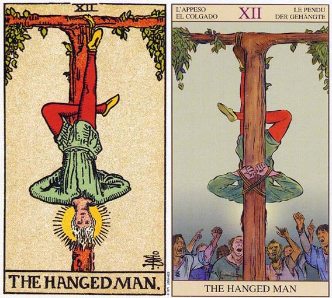

相信在你的生活中，一定也会存在这样一个角色——她们特质相同，天生貌美；她们拥有出众的气质和纤细高挑的身材，走在路上轻易吸引聚焦，似乎与生俱来就该被捧在手心的好面相，拥有一切美好事物的人生。然而，越是漂亮的姑娘越是坎坷。她们美好的面容下一定隐藏着暗黑的影子，光鲜的皮囊是她们能够赖以生存的唯一凭证。她们就像是牌局上看不清出路的倒吊人，轻易地丢掉了凭着好运气拿到的王牌，又在不合时宜的时机all in，最终输得一败涂地。以下是关于塔罗牌倒吊人解释大全。塔罗牌倒吊人资料
吊人「牺牲」
the Hanged Man
对应星象：双鱼座
关键字：牺牲、付出、考验、受苦。
每月12日 - 倒吊人，塔罗牌大阿卡那的第12张是“倒吊男”，他用单脚倒吊在树上，虽然他看来有点无助，事实上，他掌管沉思和精神面的力量。因此，当牌面正立时，表示认清极限、解决问题和拥有人文特质。倒立则代表在精神上有所局限，并且缺乏远见。
物语一 【Rider-Waite】
一个人吊在Ｔ字形的绞台上，头朝下，一只脚的脚踝绑着绳子。
他的手放在背后，一只脚和另一只脚成fylfot十字。
脸部表情像个训道者，没有丝毫痛苦。
这树是活的树，暗示着停止的生命，但是没有死。
这个姿势是痛苦的，不过他脸上没有丝毫痛苦，表示是自愿的。
物语二 【颠覆塔罗牌图解速成】
树代表生命无限的力量，头上的光芒代表黑暗中的亮光。
脚成的倒三角代表物质，手成的三角代表精神与决心。
物语三 【塔罗牌灵测游戏】
一些古老的塔罗牌，这张牌被称为，这是源于犹大的典故。
塔罗牌倒吊人牌面故事
1.倒吊人图案简单，含义却深远。我们看到一个男人在一颗T字形树上倒吊着。他两手背在背后，形成了一个三角形。两腿交叉形成十字。十字和三角形结合在一起，就是一个炼金符合，象征伟大志向的完成，也象征低层次的欲望转化到高层次的灵魂（炼成黄金）。红裤子象征身心灵中的身，也就是人类的欲望和肉体。蓝上衣即身心灵中的心，象征知识。他的金发和光环象征智慧和心灵的进化，也就是灵。金色的鞋子则象征倒吊人崇高的理想。
2.这是一位被倒吊在一颗T字行树上的年轻人。他两只手背于身后，一只脚却屈起，整体形象一个完成炼金术的符号。象征伟大事业的完成，低层次的欲望转化到了高层次的灵魂。红的的裤子象征“身”，即人类的欲望和肉体；蓝色的上衣象征“心”，即是知识；金发和光环象征“灵”，即智慧和心灵。金色的鞋子象征吊人崇高的理想。吊人的表情是平静的，他甘愿做自我牺牲，即使肉体毁灭了，灵魂会永远存在。他深悟其中的道理。再糟的情况，只要耐心的等待，厄运终究会过去。
3.若把吊人颠倒来看，就不再倒吊，且很像世界牌中的舞者。这暗示了吊人最终能转正，看到事物真实的模样。吊人的编号是12，正好是世界牌21的相反，它是倒吊的世界，敢与众不同，做自己想做的事情，且不是像愚人一样出于自己的本性，而是出于对世界的深层理解，吊人头下脚上，也暗示着换一个角度看世界，换一种思考模式。
4.吊人与海王星相对应，代表牺牲与理想。他安宁而祥和，是自愿的牺牲，有着智慧上的深成理解，他不挣扎，因为他明白牺牲会换来更有价值的收获。有舍才有得；它是崇高的殉道者。
塔罗牌倒吊人牌义解释
1.把倒吊人颠倒来看，倒吊人就不再是倒吊人的了，而他的姿态看起来相当类似世界牌中的舞者。这暗示倒吊人最终仍能转正，看到事物真实的模样。倒吊人和命运之轮及正义三张牌，都可以看做大阿尔卡那的中点。命运之轮是转折点，正义是中心，而倒吊人的编号12正是世界21的相反，他是倒吊的世界。倒吊人和愚人也有共同点，他们都敢于与众不同，做自己真正想做的事。愚人主要出于本能，而倒吊人出于深沉的理解，因此他不畏惧世人的眼光，把自己吊在树上。
2.倒吊人的对应星座是海王星，是颗代表牺牲与理想的星。在预测上，倒吊人主要有牺牲的意义。他并不是被强迫的，而是出于自愿。仔细看他的表情如此宁静安详，还有他头上的智慧光环，显示他在精神上的理解已经超越常人。他不挣扎，也不想挣扎，因为他明白随牺牲而来的将是更有价值的收获。以不变应万变，不采取任何行动，才是倒吊人的作风。
3.倒吊人悬吊着，一动不动，因此倒吊人 也代表等待、拖延、悬置、遇到瓶颈、无法下决心。此时莫急燥，倒吊人的主要课题就是以退为进，借此放手我们可以赢得更多，借此退让我们可以取得控制权。激进行动或任何大刀阔斧的举动，在这个时候不会有帮助。
4.倒吊人脚上头下，用不同的角度看世界。所以倒吊人也建议我们换个角度思考，换个角度看世界。很多事情都是一体两面，换个角度看，你将看到不同的景观。倒吊人出现，提醒我们要保护弹性，不要使用从前僵化的思考模式。
塔罗牌倒吊人牌面解释
解读一
树代表生命无限的力量，头上的光芒代表黑暗中的亮光。 脚成的倒三角代表物质，手成的三角代表精神与决心。
解读二
一个人吊在T 字形的绞台上，头朝下，一支脚的脚踝绑着绳子。 他的手放在背后，一支脚和另一支脚成fylfot十字。 脸部表情像个训道者，没有丝毫痛苦。 这树是活的树，暗示着停止的生命，但是没有死。 这个姿势是痛苦的，不过他脸上没有丝毫痛苦，表示是自愿的。
1.这张牌象征自我牺牲，牌面描绘的是一个双手反绑，被倒吊起来的勇士，他头上已经出现了隐约的天使光环。尽管旁人认为这无比痛苦，他却一脸的安详，因为他知道自己是为别人而牺牲， 即使他的肉体毁灭了，但他的精神将永存。
2.这张牌告诉我们，再糟糕的境遇也不过是对我们的一种磨练，厄运总会过去。正如传说中的凤凰涅磐，又如北欧神话中的奥丁献身于绞架才学会魔法、文字、咒语以及诗歌。忍耐眼前的厄运，接受命运的安排，好好反省过去的得失，为将来的再度崛起储备力量，才是最重要的。
3.是牺牲小我完成“大我”，还是天将降大任于斯人也，必先苦其心志又劳其筋骨，端乎我心中的这把尺放在哪一个方位上。如果想成大业，那么要牺牲的相对也更大，甚至可以达到相当恐怖的程度。千万别小看这张牌，在算过许多实际案例的命盘之后，我彻底改观。这个大我，可以是“大”我，更可以是大“我”，慢慢品尝个中滋味，蕴藏无限。
4.许多人，经常用爱来绑架别人，美其名曰牺牲小我，实质上，却是要别人来完成我的大我。但，如果倒吊人是正面的思考逻辑，光明磊落，彻底无条件牺牲，反而在不知觉间，真正超越了大我，而形成没有边际的大我，这时，我，再也不重要了。
5.十二与二十一这两张牌的组合，同样是魔术师与女祭司，却造成截然不同的结果，便明白，吊人与世界，其实是同一事件的一体两面，好好推敲，收获会非常可观。
6.被倒吊在世界之树上，却平静地接受自己的命运，是塔罗主牌中最神秘的一张图象，与萨满信仰有非常紧密的关系，认为灵性的开悟来自于全然的牺牲奉献；世界之树的根深埋于世界之底层，而树干则浮现于我们可观测又能触摸的世界里，而树枝则伸展到天际，是非常强而有力的生命征兆。
7.倒吊人为胸襟辽阔的梦想家行星海王星所驾驭，象征着我们的潜意识生命状态，事情的真象远非我们所看见的表象。
8.拿到这张正牌时，表示自己处于一切都不如愿的失控状态，心境直落谷底，有可能极端自卑，仿佛一无是处；但若因此彻底自我颠覆，正如脱掉旧皮般，即将面对新我，而忽然间造就了“自大”。在逐渐踏实的成长中，经验着无法理解的清晰觉醒，强烈地碰撞着自己的灵魂，而绝妙地，带来面对一切事物的全新感悟，有如经历过一场内在大震荡的洗礼。此时遇到的伴侣，虽带来革命性的颠覆，却有着疗愈般的神奇效果。
9.若拿到反牌，则进入困惑与挫折的颓废，甚至陷入药物上瘾症。要摆脱耽溺的困境，急需接受牺牲奉献的使命，以便更深入灵性奥秘层次，从而找出自我觉醒的解药，很像是上瘾症的取代品。通常，认清自我牺牲的本质，很快便能改变困扰已久的亲密关系。若能超越这命定的课题，不论是正负牌，都能为自己找到新生命与再生的机会。
10.吊人最该警惕的除了清楚明确的价值观之外，内在潜伏的上瘾症，是伺机而动的恐怖分子。
塔罗牌倒吊人解牌参考
正位：
1.接受考验，不贪图眼前利益。
2.有牺牲，但有失必有得，有偿的牺牲。
3.面临抉择时内心平静，做自己想做的事，听从了自己内心的选择。
4.等待不急躁，换一个角度思考。
5.充满奉献的爱，或明知辛苦不一定有回报仍然全心付出全力以赴。
6.感情方面可能需要静静等待一段时间。
逆位：
1.苦苦挣扎，钻牛角尖，想不透人生的真谛。无法换一个角度看世界。
2.利益主义者，不愿付出和牺牲。
3.没有耐性，不努力。
4.受社会眼光的制约，不敢做自己的想做的事情。
5.得不到回报的爱情，或者指无谓的毫无结果的牺牲。
6.可能出现身体上的伤害，重则折断骨头之类。
7.也可能暗示瓶颈时期或者受牺牲时期的结束。
塔罗牌倒吊人两性关系上的意义
在两性关系分析当中，倒吊人代表一段反省的时光。或许你正从一个两性关系的日常生活中抽力出来，以反省你的精神方向，以及两性关系的方向。
内在的和平及宁静会伴随着这张牌而来，虽然你的伴侣可能会发现，很难在情感或社交上与此刻的你接近。这段时间你会把注意力集中在自己，而非伴侣身上。这可能是要求你周遭的人多谅解，及付出耐心了。
在阿伦到山上进行为期十天的冥想之前，他得牌面上出现了倒吊人这张牌。这项静坐打禅的课程，让他有很多的事件来反省自己、人生，以及亲密关系。
塔罗牌倒吊人倒立的倒吊人
这张牌倒立可能暗示无法得到超越社会压力的自由。它代表你会听从别人对你的期望，而非顺从你内在的声音。或许你一生都在利用角色模式引导你，而非直接去体验生活。
它也可能意味你以某种方式在抗拒你内在的自我。或许你正抗拒着自己的某些部分，不愿顺从自己的精神目的，你可能还在为保持财产，或物质生活上的巅峰状态而奋斗不解。声明要求你去反省自己的方向，以及你现阶段精神的感情实现层次及情绪满足，然而你努力想要保持现状。
你受到拘束，却拼命想要的自由。可能你并不理解目前舒服的目的，或它能带给你什么，挣扎并不恰当，因为在适当的时间到来之前，你不可能得到自由。
如果你能妥善的运用这段时间的话，那么当生命要你迈步向前的时候，你就不必再花时间去思考了。如果你现在不进行反省的话，可能会导致更长的耽搁，或重复的模式。顺从自由其代价的。
塔罗牌倒吊人大体上的意义
倒吊人是一张代表投降的牌。它暗示，当你在这段期间内，透过对生命的顺从，并让它引领你到你需要去的地方，那么你便可以获益良多。
倒吊人还是一张代表独立的牌。这段期间内，你应该顺着感觉走，或是接受自己，即使别人都认为你的方式很奇怪也不打紧。它也可能象征，经历了生命中一段艰难的时光后的心灵平静。
现在不是挣扎的时候，静下来好好思考你过去的行为，以及未来的计划。这只是一个暂时的状态，只要你妥善的运用这段时间，对你应该是有好处的。让生命中的事物自然而然的发生，或许你会对结果感到惊喜。
带着“会有更美好的事情临降，来取代你所捐弃的事物”的信念，顺从于人生。花点时间来观察潜伏于事件底下的生命潮流。生命会给你一段宁静的时光，远离世界的纷纷扰扰，所以善用这段时光将是明智之举。
塔罗牌倒吊人正逆位解读
正位
工作：耐心，就是这张牌在财务问题上所要传达的讯息。如今你的工作状况可能受限，然而它们将会因为你的改变而改变。抓住这个机会，检视你在工作方面获得了什么，并且想想是否值得继续努力，再想想未来你的工作计划是否值得你投入时间和努力去追寻。
感情：若在恋爱中，倒吊人代表一段反省的时光。或许你正从一个两性关系的日常生活中抽力出来，以反省你的精神方向，以及两性关系的方向。若单身，你现在最好不要急切的投入到一段感情中，请先思考一下自己真实的想法，然后跟着感觉走。
健康：当健康问题的牌形出现悬吊者牌，代表体能不佳。现在要多花时间去阅读、冥思还有休息。让自己的身体太劳累可能会导致受伤或者崩溃。花点时间深思，会有助于储备均衡的体力。
ALL:接受考验、行动受限、牺牲、不畏艰辛、不受利诱、有失必有得、吸取经验教训、浴火重生、广泛学习、奉献的爱。
逆位
工作：现在是投降的时候了。对现在的你来说，失去任何东西都不算什么了。倒立的倒吊人牌提供一个重返正立的正义牌课题的机会，也就是强调个人的责任。要深刻的反省，是什么样的行为导致你目前的景况，并坦然的接受。至于财务计划或投资方面，这张牌暗示这是一个利润微乎其微的蹩脚投资。如果你仍顽固的追求，那么可以预期你将会被套牢或者搞到财务枯竭。
感情：若在恋爱中，吊人逆位，表示为爱付出的牺牲可能无法获得回报，或是爱情中受苦和瓶颈时期的结束，也可能表示当事人没有吊人的智慧，无法放手，却苦苦挣扎，钻牛角尖，企图与命运搏斗。若单身，则代表你可能非常不满目前单身的情况，想解脱，但是却忽略自己内心真实的声音，可能会选错对象。也可能暗示你会顺从家人的意思去相亲。
健康：你必须为过去的行为所造成的健康和身心均衡负起责任，否则伤害有可能越来越大，甚至导致生病。
ALL：无谓的牺牲、骨折、厄运、不够努力、处于劣势、任性、利己主义者、缺乏耐心、受惩罚、逃避爱情、没有结果的恋情。
倒吊人与女皇之间的相似点与区别
出生年月日相加起来得出3或者12的人们拥有“倒吊人&女皇”这个组合的能量。这是一对很有深度、很丰富、很有意思的组合！
相似点
两张牌里的主要人物都会给人静止不动的感觉。“倒吊人”的一只脚被绑在了身后的树或者十字架上，虽然另外一只腿貌似是自由的，可是这位被倒吊过来的人不挣扎、不毛躁不安。他只是静静地在等待，在感受着此时此刻。而“女皇”更是舒适地坐着，女神身后的靠枕是其他大牌人物都没有的特殊待遇。
两位主人翁都没有半点行动或者活动的迹象。他们的肢体语言表达出一种被动、安逸、祥和的感觉。他们的能量呈现方式是很温和、固定、静止不动的。两位主人物都有金色头发，塔罗中这些人物象征着创意、想象能力强、灵性追求、头脑清晰、聪明等含义。另外一个共通点可能很难在牌面上看见，就是两张牌都有出生、诞生等主题意义。虽然“女皇”的长袍很宽松，可是这位女神却是大地母亲，永恒的孕育者，“三生万物”的宇宙母性代表者。所以，世间万物都来自于“女皇”的能量，所有的事物都是在“女皇”里诞生的。
“倒吊人”的能量也是围绕着母性为主题的，因为它是儿子的角色，也是所有灵性与觉悟的启蒙点。这里就要说到“倒吊人”的占星属性了，它的占星属性是水元素！在卡巴拉塔罗中，所有的转化都是在水性能量、阴性能量中开始成形的。所以，当一个人在三维生活中觉悟了，开始意识到自己拥有着灵魂、与灵性的旅程时，就是在“倒吊人”里开始的转变。也许是因为两张牌都与出生有关系，他们的专注点是生命力的！“女皇”所涉及的是有形体的、三维世界中的生命力，让我们在生活中切切实实地存在与投入。而“倒吊人”的生命力却是在与灵性层面、灵魂的无形世界的连接时产生的。它让我们的三维生活和存在充满着意义，这是另外一种活力与生命力的感受。
对比/差别
两张牌之间也有很多很有意思的不同之处。“倒吊人”中的人物主色调是红与蓝，塔罗中红色是激情、欲望、行动力；而蓝色有理性、宁静、静止等含义。他是阳性能量与阴性能量的替换与交接点。相反，“女皇”身上的长袍是以红与白为主。红色是激情、欲望，等火相能量的代表，而白色是灵性的、纯洁的、无形光芒的象征。“女皇”与“倒吊人”之间还存在着很不一样的视觉角度和世界观。一直都坐着的“女皇”所看见的世界无论怎样都会与被倒过来悬挂在空中的“倒吊人”所看见的世界很不一样。这仿佛是物质世界与灵性世界的差别，虽然不是完全得相反，可是观点会很不同。
“女皇”的占星属性是金星，女神维纳斯据说是从海里、在浪与浪之间的冲撞中形成的泡沫里诞生的，而且一出生就是一位成年的美女，乘着珍珠贝壳浮在水面上！金星掌管金钱，美与爱，所以“女皇”是主宰这些领域的女神。而“倒吊人”的占星属性却恰恰是“女皇”的出生地——水元素！“倒吊人”是深海，可是它也象征着“女皇”的孩子。所以这么一来，它们是互相的“出生地”，互相的来源元素。这一概念非常得耐人寻味。另一重要区别是“女皇”的母性本质让它非常得“入世”。这位女神为了她的孩子们会不怕劳累地事事参与，亲力亲为。有时候她还可以变得情绪化、复杂、戏剧化，在生活中妈妈一般都会注意到孩子们的细微需求。可是，作为灵性的觉悟点的“倒吊人”却是很放松的，像在冥想状态般的态度面对世俗中的一切。它特别得宁静、随意、不强求、不挣扎。在每天的生活中，“倒吊人”的能量会是有距离感的，可是永远保持沉静、平和、内观、安详的心态。它的生活很简单，会跟嘈杂、复杂性、戏剧化的事物保持距离，是一个脱俗、超越世俗的能量。
互相协调的“倒吊人&女皇”
此组合人群如果得到整合，活出了自己的最亮的真我时会非常得慷慨，大方，忠诚，保护意识强，有创造力和天才般的原创能力！这组合的人也很有英雄风范，他们能对于他人给予无私奉献和关怀，大爱可以接近超然的境界。“圣人”好像都具备这组合人的本质。母亲和孩子、照顾他人和被照顾等主题都是“倒吊人&女皇”组合需要面对的。理解到三维世界中的真实存在和灵性上的超然存在也是此组合的两股对立能量。
未整合的“倒吊人”
“倒吊人”未被整合好的时候会出现自我为中心，自我陶醉、任性、放纵、不敏感等现象。“倒吊人”的阴暗面可以是一味地为自己而活，以满足自己的私欲为首要任务而忽略掉身边所爱所关心之人的感受。它还可以变得被动、懦弱、沮丧、消沉，而且很容易会迷恋上或者沉浸于某种不良嗜好中。另外一种不被接受的“倒吊人”倾向是做事情不切实际，非常得奢华和浮夸。很多时候，这是因为它感觉到无比得孤独，此时的“倒吊人”需要和依赖别人的辅助。“倒吊人”那安稳、宁静的眼神在未被接受时会出现心神不宁、不能集中精神等症状，还会在社交人群里显得很有距离感，很有隔阂感。这些未整合的“倒吊人”影响会使人变得没有精神、模糊，像在雾中的不清晰和不能活在当下！
未整合的“女皇”
没有被接受的“女皇”特质会变得有跋扈、专横、盛气凌人的特征！它的心胸很狭窄，气量小不说，还会有辱骂和虐待人的倾向。没有整合好的“女皇”拥有着典型的“犹太妈妈”的负面特征，比如夸张放大，对于孩子们的占有欲强，控制孩子们的一举一动，不能让孩子们自然地成长，因为那样它就不被需要了。另外，“女皇”需要别人都顺从于它的喜爱，它的日程安排，给予它足够的专注力。当“女皇”的孩子长大了要离开时，它会利用愧疚感、消极的攻击，又或者是以退为进的办法使孩子们牢牢地留在它的身边，继续受它所管制。这是因为不被需要会让未整合好的“女皇”感觉到被遗弃的痛。这种凶猛的、极端的母爱会使孩子们感觉到无比的负担、沉重与懦弱感。还没有被接受的“女皇”能量也许会呈现出大嘴巴、目光短浅、过度纠缠与细节和侵入性的强势性格等现状。
塔罗牌倒吊人（古塔罗篇）
先说说数字吧，在塔罗牌序列中，吊人一般被置于第12号。数字12可以算是最后一个数字，也是一个十分重要的数字。作为代表完成的12，荣格主张几乎在所有文化里有序列的项目都会以12作为终结点。最简单的就是白天黑夜各12小时，一年12个月，黄道12星座，希伯来字母中的12个单音节字母，赫拉克勒的十二件苦差事，音乐中的12个半音，基督的12使徒。
前面说到的7＝3＋4，是作为神圣与物质相加，而12＝3×4，因此同样也代表了精神层面与物质层面的完美。我们要注意的是塔罗吊人的牌图，大多数牌图中的吊人往往只是一只脚吊着，另一只弯着，正好构成数字4的符号，而吊人的双手放于背后的姿势又构成了三角形状，以几何的形式表达了数字3。所以吊人这张牌可以代表由物质（4）层面转化提升到精神（3）层面。
不过这只是其数字的神秘主义层面上的寓意。古塔罗中的吊人其图像寓意并不复杂。
之前我们说命运之轮的时候提到，一个人不可能永远处于命运的最高点。而在吊人这里，我们看到的是一个人头部朝下的人，这个图像代表的就是从命运之轮上下滑的含义。吊人这张牌在古塔罗中被称为“Traitor”（背叛者），象征的是能量、势力的失去。
最早期塔罗的吊人图像与后来十七世纪左右的马赛塔罗的图像从本质上来说并无差别，都画的是一个脚被绑着的人头部朝下地倒吊着。
在早期的塔罗牌里，吊人图中地人从来都没有正过，但后期一些塔罗牌里，却有正过来地图像，这是源自法国神秘学家de Gebelin对吊人内涵的错误理解。
在文艺复兴时期的意大利，这个图像就是指叛逆者和叛国者，在Minchiate塔罗和同期其他的塔罗牌里，吊人牌的名称就是“Traitor”。在意大利，对于叛国者的惩罚便是在执行死刑后再将人倒吊起来。即便在二十世纪的第二次世界大战后，墨索里尼在死刑后也同样被绑脚倒吊。所以，吊人图像又被称为羞耻与可耻之图。
有时，我们在塔罗的吊人图中也可以看到画着一些金钱从被吊者的口袋中掉落，这个形象加强了“失去、损失”这类含义。所以，吊人牌的原始意义便是“受苦、不幸、失去、损失”。这层含义可以和吊人所在的第二组大牌的整体含义关联起来，大牌的第二组（8－14）说的是时间与命运，吊人便是命运悲惨的一面。由于自己的不善行径或者也可能是由于受到冤枉而遭受倒吊的惩罚，倒吊者的权势、地位、财富皆然失去。在1664年的博罗尼亚塔罗牌里，我们可以看到图像中一个人正准备用锤子锤向另一个人的头部。
后期的神秘学家们将吊人这张牌解释为“殉道，为了获得精神上的成长作出肉体的牺牲”，这种解释与吊人原本的含义并无不一致。吊人牌的位置处于力量（英雄主义）之后，在与力量牌相关的希腊神话中，赫拉克勒因自己的罪行受到惩罚，并须要为赎罪而去完成各种任务，他不但失去自己原先的地位，还要遭遇各种困苦与艰辛。而实际上，英雄之旅是不可能没有困难和坎坷的。再想想，古希腊极具智慧的哲学家苏格拉底，雅典人非但没有对他的智慧进行奖赏，反而将他判为叛逆者并逼他喝下毒药。还有耶稣基督，他也曾被判定有罪而受到残酷的刑罚。所以，我们在吊人之后随之就能看到的牌就是“死亡”。
塔罗牌倒吊吊人（伟特塔罗篇）
在我们一开始讲述愚人牌时就提过，在金色曙光的对应体系中，愚人、吊人和审判三张牌分别对应了四元素中的风、水和火，而其他大牌则对应了黄道星座或行星。塔罗历史学家Decker和Dummett分析了伟特一开始写的塔罗书《The Key to the Tarot》，他们发现，伟特将这三张牌视为一个独特的牌组，分别代表了神秘学寻求的三个阶段：新生——蜕变——重生。伟特将吊人视为灵魂之旅的钥匙，因为吊人代表的是获得启迪之前所必要的仪式。原先吊人牌图中用于倒吊的横杆子在伟特牌里变成希伯来字母Tau型十字符号，代表的是将人类苦难与基督殉道的结合，这层含义在吊人头部的光芒这块也得到重申。吊人的手足所构成的姿势就是金色曙光组织的象征符号，符号中的三角形就像吊人的手臂；而上面的红色十字则像吊人双腿的姿势；在下面的三角形当中有一轮太阳从海面中升起，这就如吊人头部的光晕。
总的来说，上下颠倒的吊人代表了态度、观点、立场的转换，但吊人还有一种意思便是失去位置。他为了更高地目标而自愿地去经历严酷的考验与磨练。
塔罗牌倒吊人网友问答:
塔罗牌倒吊人解释问题一:塔罗牌中倒吊人代表什么？ 网友解答:吊人LE PENDU 相关语：牺牲 对应星象：双鱼座 吊人牌的意义并不是如传说中代表失败，恶运，你必须配合他的精神──牺牲。虽然图中的吊人处於一个倒逆的处境，但他仍能处之泰然，牺牲小我完成大我的完满精神，如果你得到这张牌，必须明白要付出才有收获，也要用不同的角度去面对你的问题，找出解决之道。 倒吊人 相关语：牺牲 对应星象：双鱼座 人间的规则和天地间的法则不一样，没有人关心正义，每个人都关心利益。 本来，任何生命都应该被善待，即使对方是你的食物，你也应该存有一份尊敬和感激之心。 可是在人间，一味地掠夺改变了生态，变异的环境生出了变异的病毒，而人们依然不知反省。 如果你追求正义，就会和历史上无数为正义献身的人一样，为世人所唾弃。无它，只因为你侵犯了别人的利益，别人就会把你当作仇敌。 在人们眼中，世上最危险的人，不是贪得无厌只知道掠夺的家伙，因为他们可以被收买，只要给钱就能换得一时平安。 最危险的，恰恰是不在乎一己私利的人，是大公无私的人，是为了真理抛头颅洒热血的人，因为他们无法被收买。 为了心中的正义，去侵犯别人的利益，这样的人会威胁到每个人的安危，所以每个人都会联合起来对付他。 而这张牌所讲述的，就是坚持正义的代价——被吊起来示众，杀一儆百。 吊人的含义是广泛的。也许，你并不会受到直接的惩罚，但却能感受到大家的疏远和无形的隔离。于是你会明白，每个人都要过他的小日子，没有人愿意为了别人的幸福付出一切。 选择正义，就是选择了英雄之路，选择了孤独。也许你死后会被人敬仰崇拜，但那只是因为你已经死了，不会在威胁到任何人的利益。在活着的时候，你注定孤独，注定疏离。 塔罗牌倒吊人解释问题二:塔罗牌中“倒吊人”什么意思?一直拿到这张牌寓意着什么? 网友解答:吊人是塔罗牌大牌中处于中段位置,它表示一种束缚,是一种现阶段不被认可的标新立异,一种付出,或是带有审判性质惩罚,但是这些都是客观的,掉的人神情毫无痛苦,代表了他主观的思想永远不会被束缚,人物头上的光环象征了智慧,很多人也把吊人誉为“倒过来的世界”,世界本来就不是绝对的,换一种角度,也许吊人的眼光才是世界的本质。 塔罗牌倒吊人解释问题三:塔罗牌里的逆位倒吊人是什么意思? 网友解答:逆位释义： 无谓的牺牲、骨折、厄运、不够努力、处于劣势、任性、利己主义者、缺乏耐心、受惩罚、逃避爱情、没有结果的恋情.当牌面倒立时,事业上缺乏远见,迷失了努力的目标.感情上你没有了为对方付出的念头,而对方对你的态度依旧,这使你更想逃避.你已经忽略了内心深处正确的判断力,这让你开始遇到很多失败. 塔罗牌倒吊人解释问题四:塔罗牌灵倒吊人。买了本塔罗奥义,按照指示,挑出的牌灵是倒吊人.因为其他21张牌灵解释都有说擅长什么领域,而只有倒吊人是说这副牌是一个奉献者,其它没有什么有意义的.求,此牌擅长的问题,还有这副牌的含义.PS：不要给我出自塔罗奥义的答案,我会翻书. 网友解答:理解你的牌,是产生沟通的开始,吊人代表的塔罗牌,是很好的,牺牲,暗示着付出的真谛,你的牌会非常擅长解读恋人之间的关系,如何付出与牺牲,如何不求回报,所以她会给你的答案多少会有些不乐观,未必是一味的鼓励和积极,而反会更多的要求牺牲和付出的心态. 塔罗牌倒吊人解释问题五:塔罗牌测试爱情，正位倒吊人什么意思，详细点 网友解答:好好思考一下这段爱情有什么不足之处，也许两人相处的时候会经常因为一些琐事发生争执，必要的牺牲可以获得两人的和平相处，吊人牌提醒你应该多让着点你的恋人。 塔罗牌倒吊人解释问题六:塔罗牌 关于爱情的 吊人 逆位 是什么意思?我不知道测的阵叫做什么名字,是一共九张牌,中间的代表结果,第1.2.3.4张代表自己,6.7.8.9代表他,其中结果的那张是吊人,逆位,是不是没有结果了?代表我的,第一张不记得是哪张了,第2是力量逆位,第3是网友解答:月亮正位,第四是愚者正位,他的是,一张世界逆位,一张命运之轮正位,一张女皇正位,一张皇帝正位,我们之间有结果么? 通常来说就像第一位说的那样倒吊人逆位是指付出得不到回报.建议你最好弄清楚你用的什么牌阵,这个很重要,但要是再占一次,准确性就不能保证了,因为塔罗对于同一件事的占卜期限是时间的本质是否改变. 对于你所提供的内容,我大胆猜测一下以供参考. 你对于这一段恋情,立场不坚定,抱有怀疑,内心不安定,对你俩的未来很迷茫. 对方是个很理智的人,明白自己要什么,应该做什么,他对于他目前的现状并不满足,他相信他能得到更多,并且一直往他的目标方向努力.我想塔罗在这一方面,并非是告诉你他是怎么看待你们的感情的,而是正面告诉你对方是个怎样特性的人. 最后,塔罗是想告诉你没有付出就没有回报,你的重心不应该是对你俩未来担忧惶惶不可终日,而是为你们的感情维系做出实际行动. 塔罗牌倒吊人解释问题七:塔罗牌占卜问别人的身体情况抽到倒吊人是什么意思？ 网友解答:这个问的有一点奇怪，需要问的详细一些： （1）身体好，看一下有没有需要改善的 （2）身边不好，看一下近期有没有改善 但是出现这一张牌，代表说感觉做什么的无济于事，因为也抓不到重点。 塔罗牌倒吊人解释问题八:我用卡罗牌占卜我的近况，塔罗牌给我的建议是逆位倒吊人，是什么情况？ 网友解答:您好，每个人都会遇到困境。未来的路是自己要走的，要相信命运是掌握在自己手中的。卡罗牌只是一种消遣用的玩具，如果他真的能占卜的话，那些卡罗牌大神岂不是已经掌控全世界了？虽然您现在出现不顺的困境中，但是只要认真的反思导致这个情况出现的原因并及时加以改正，充满信心的迎接明天的太阳，哪怕自己跌倒了无数次，站起来就有走出困境的希望。希望您烦躁的心情早日消失，人生就是要快快乐乐的。